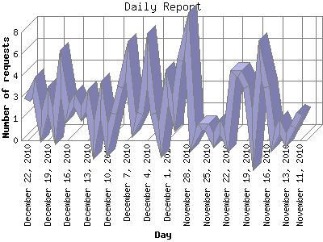

The Daily Report identifies the activity for each day within the reporting period. Remember that one page hit can result in several server requests as the images for each page are loaded.

| Day | Number of requests | Number of page requests | |
|---|---|---|---|
| 1. | November 11, 2010 | 2 | 2 |
| 2. | November 12, 2010 | 1 | 1 |
| 3. | November 13, 2010 | 0 | 0 |
| 4. | November 14, 2010 | 1 | 1 |
| 5. | November 15, 2010 | 0 | 0 |
| 6. | November 16, 2010 | 4 | 4 |
| 7. | November 17, 2010 | 6 | 6 |
| 8. | November 18, 2010 | 0 | 0 |
| 9. | November 19, 2010 | 4 | 4 |
| 10. | November 20, 2010 | 5 | 5 |
| 11. | November 21, 2010 | 5 | 5 |
| 12. | November 22, 2010 | 0 | 0 |
| 13. | November 23, 2010 | 1 | 1 |
| 14. | November 24, 2010 | 0 | 0 |
| 15. | November 25, 2010 | 1 | 1 |
| 16. | November 26, 2010 | 1 | 1 |
| 17. | November 27, 2010 | 0 | 0 |
| 18. | November 28, 2010 | 8 | 8 |
| 19. | November 29, 2010 | 6 | 6 |
| 20. | November 30, 2010 | 2 | 2 |
| 21. | December 1, 2010 | 4 | 4 |
| 22. | December 2, 2010 | 0 | 0 |
| 23. | December 3, 2010 | 2 | 2 |
| 24. | December 4, 2010 | 6 | 6 |
| 25. | December 5, 2010 | 2 | 2 |
| 26. | December 6, 2010 | 1 | 1 |
| 27. | December 7, 2010 | 6 | 5 |
| 28. | December 8, 2010 | 4 | 3 |
| 29. | December 9, 2010 | 2 | 2 |
| 30. | December 10, 2010 | 0 | 0 |
| 31. | December 11, 2010 | 3 | 3 |
| 32. | December 12, 2010 | 0 | 0 |
| 33. | December 13, 2010 | 3 | 3 |
| 34. | December 14, 2010 | 2 | 1 |
| 35. | December 15, 2010 | 3 | 3 |
| 36. | December 16, 2010 | 2 | 2 |
| 37. | December 17, 2010 | 5 | 5 |
| 38. | December 18, 2010 | 1 | 1 |
| 39. | December 19, 2010 | 3 | 3 |
| 40. | December 20, 2010 | 1 | 1 |
| 41. | December 21, 2010 | 4 | 4 |
| 42. | December 22, 2010 | 3 | 3 |
Most active day October 29, 2010 : 8 pages sent. 8 requests handled.
Daily average: 3 pages sent. 3 requests handled.
This report was generated on December 23, 2010 06:06.
Report time frame May 22, 2010 09:00 to December 22, 2010 22:29.
| Web statistics report produced by: analog 6.0 / Report Magic 2.21 |